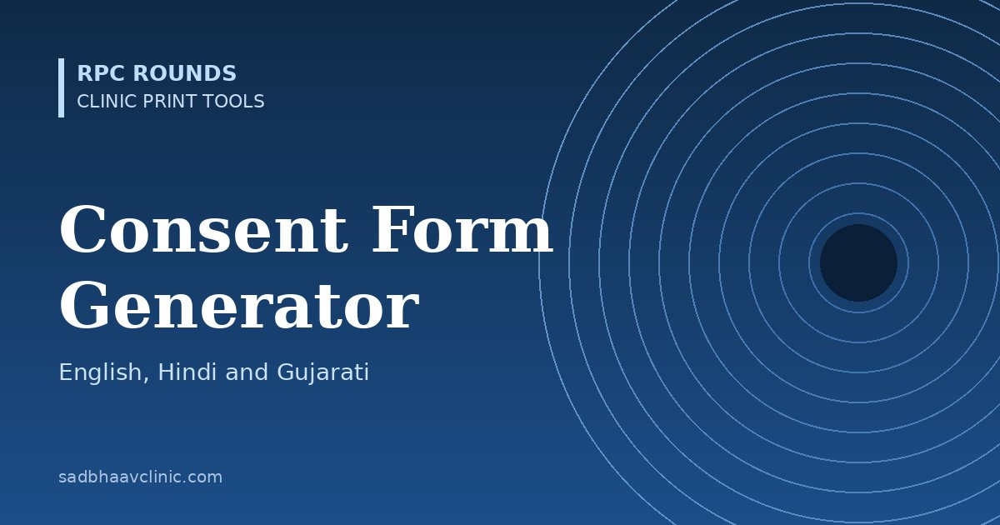

For: PG residents · Practising ophthalmologists
Last updated: November 2026
Key points in 60 seconds
A consent form records a conversation; it does not replace it. A good form names the procedure and the eye, explains the benefit, the alternatives and the material risks in the patient's language, and is signed after the patient has had time to ask questions.
Part of the clinic print tools: fill in, preview and print on your letterhead. Nothing you type about a patient is uploaded or saved.
Choose the procedure, the eye and the language, edit the risks if you need to, and print a consent form for the patient to read and sign. The form supports your discussion with the patient; it does not replace it.
The legal basis and the risks to discuss for each procedure are covered in informed consent for eye surgery.
The Hindi and Gujarati text is a careful translation of the English form. Have it checked by someone fluent in the language at your clinic before routine use, and keep a copy of the version you use.
📘 Want more exam-ready material? See Most Commons in Ophthalmology on Kindle, or browse all my books.
How to cite this page
Patel D. Eye Surgery Consent Form Generator: Procedure-Specific Risks in English, Hindi and Gujarati. RPC Rounds (Sadbhaav Eye Clinic). Updated November 2026. Available at: https://www.sadbhaavclinic.com/eye-surgery-consent-form-generator.html. Accessed [date].
Looking for an eye specialist in Ahmedabad? Eye Department at Sadbhaav or book a consultation with Dr. Dhaval Patel.